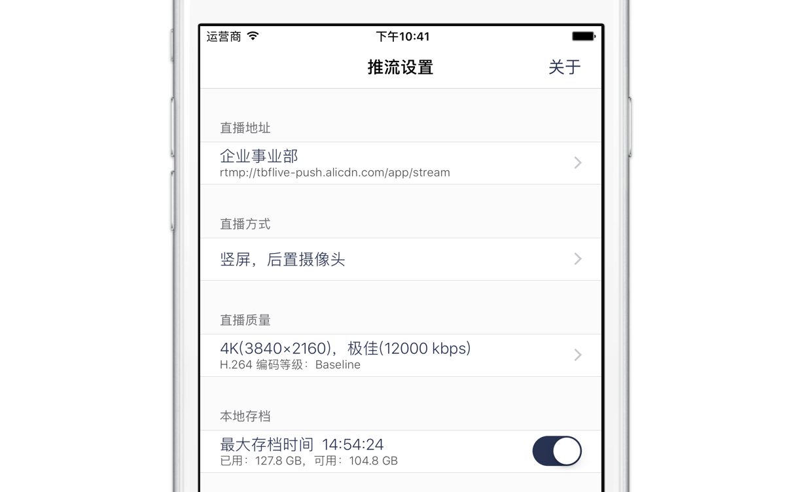

开始您的直播
易推流是一款基于实时消息传输协议 (RTMP) 的 iOS 应用，可以向任何符合该协议标准的服务器推送视频流，兼容目前大部分视频直播平台。
基于的 iPhone 的强大多媒体性能，易推流能够在采集并上传视频流的同时，对视频流进行实时处理，增加诸如美颜，美白，磨皮等滤镜；或是将任何您想要的图像，比如您的特有标志、人物介绍、比赛的得分等插入到视频流中，让您在移动平台上获得电视转播的体验，但是，它更轻巧，高效。
下载应用易推流是一款基于实时消息传输协议 (RTMP) 的 iOS 应用，可以向任何符合该协议标准的服务器推送视频流，兼容目前大部分视频直播平台。
基于的 iPhone 的强大多媒体性能，易推流能够在采集并上传视频流的同时，对视频流进行实时处理，增加诸如美颜，美白，磨皮等滤镜；或是将任何您想要的图像，比如您的特有标志、人物介绍、比赛的得分等插入到视频流中，让您在移动平台上获得电视转播的体验，但是，它更轻巧，高效。
下载应用iOS 平台的原生实现，视频渲染基于 Metal ，全部使用 GPU 加速，节能低耗、又稳定高效。在移动环境下，提供更长的续航来保证您的直播不会间断。
支持实时添加美颜滤镜及logo图片水印。适用多种场景，直播介绍，字幕，标题等，一键完成。
可将直播中的音频实时智能识别为字幕，并添加到直播画面中。可随意开关，让您直播更加丰富多彩。
更多有趣实用的功能正在逐步更新中，敬请关注：